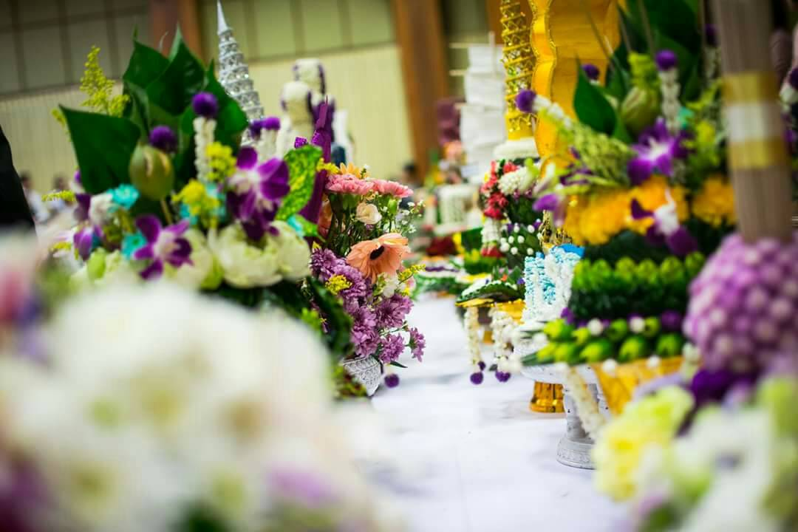

การทำกิจกรรมของคณะเริ่มตั้งแต่ช่วงแรกๆในการเรียนทำให้เราไม่ค่อยมีเวลาในการเรียนหรืออ่านหนังสือเท่าที่ควร การทำกิจกรรมนั้นทำไปพร้อมกันกับการเรียนโดยตอนเช้าพวกผมจะได้เรียนและเย็นต้องเข้าไปทำกิจกรรมทำให้เวลาพักผ่อนของเรานั้นมีน้อยมากในช่วงๆนี้อีกทั้งกิจกรรมในปีนั้น ทุกกิจกรรมจะมาต่อจากกันเลยทำให้เวลาพักผ่อนและการทบทวนหนังสือมีน้อยมาก.
แต่การทำกิจกรรมนั้นก็ทำให้เราได้คุ้นชินกับเพื่อนในคณะและในสาขาของเรากันมากทำให้เราสามารถพูดคุยแบ่งปันความรู้สึกดีๆกันได้ และกิจกรรมนั้นยังทำให้เราได้รู้จักได้สนิทกับพวกรุ่นพี่มีอะไรต่างคนก็ต่างเข้ามาช่วยเหลือกันให้ผ่านพ้นกันไปด้วยกัน ได้เรียนรู้การมีความรับผิดชอบการมีส่วนร่วมต่างๆ ทำให้เราเห็นถึงส่วนร่วมมากกว่าที่จะทำเพื่อส่วนตน การทำกิจกรรมนั้นถือว่าได้ผลดีในการทำให้คนส่วนมากได้เข้ามาทำความรู้จักกัน.
